LIHC · RNA-seq: contagens brutas (GDC)
STAR - Counts (GENCODE v36) · gerado em 22/10/2026 00:18
48,6 Mtamanho mediano
0,73dispersão mediana α
15.526genes
373amostras tumorais
50amostras normais
0,0%valores faltantes
Fonte: API do GDC (STAR - Counts)
Principais resultados
- Bibliotecas de 18,6 a 119,7 milhões de leituras (mediana 48,6). 39.399 de 60.660 features têm leitura em pelo menos 10% das amostras.
- A variância cresce bem acima da média: a dispersão mediana da binomial negativa é α=0.73 (para features com média > 10). Isso descarta um modelo Poisson e indica binomial negativa (ou Poisson-lognormal) na verossimilhança.
- A fração de zeros é compatível com a binomial negativa (diferença mediana -2,1%); inflação de zeros não parece necessária.
- Em média 23,1% das leituras de cada amostra vão para as 20 features mais abundantes (ALB, SERPINA1, MT-CO1).
- Genes codificadores de proteína recebem 97,9% das leituras (mediana).
- 15.526 genes medidos em 423 amostras (373 tumorais e 50 normais); 0,0% dos valores estão faltando.
- Os dois primeiros componentes principais explicam 19,0% e 8,9% da variância das features mais variáveis.
- Correlação mediana entre amostras: 0,65.
- Amostras com correlação muito abaixo das demais (possíveis outliers técnicos): TCGA-BC-A10Q-01, TCGA-CC-5260-01, TCGA-CC-A3M9-01, TCGA-CC-A1HT-01, TCGA-CC-A9FV-01, TCGA-CC-A7IJ-01, TCGA-CC-A7II-01, TCGA-DD-A3A6-01, TCGA-DD-A4NA-01, TCGA-DD-AA3A-01.
- Tumor x normal: 13745 genes diferentes com FDR < 5% (11632 maiores no tumor, 2113 maiores no normal; 50 pacientes têm o par tumor-normal).
- Mais aumentados no tumor: ENSG00000187730.9, ENSG00000158402.20, ENSG00000143228.13, ENSG00000100526.20, ENSG00000154839.10, ENSG00000135451.13, ENSG00000137135.18, ENSG00000142945.13.
- Mais reduzidos no tumor: ENSG00000140107.12, ENSG00000146233.8, ENSG00000170509.12, ENSG00000113600.11, ENSG00000143369.15, ENSG00000184374.3, ENSG00000175336.10, ENSG00000213398.8.
- Associações clínicas com p < 0,05 nos componentes principais: PC1 com estádio (p=0.00065); PC2 com estádio (p=0.0024); PC1 com sexo (p=0.00014); PC3 com sexo (p=0.00048); PC1 com idade (p=1.9e-05); PC1 com sobrevida (p=0.00069).
Biblioteca
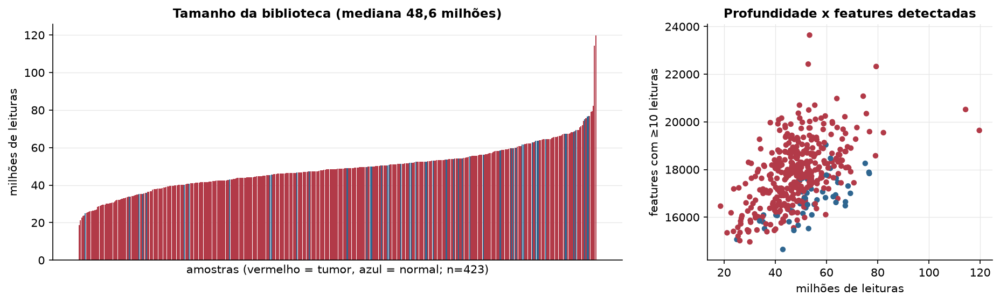
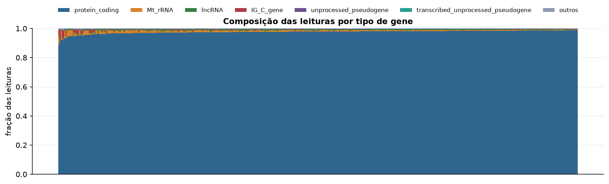
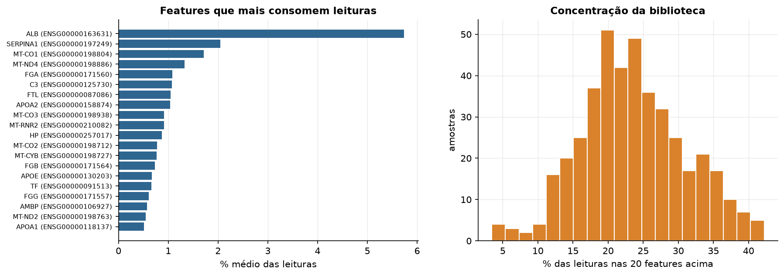
Sobredispersão e zeros
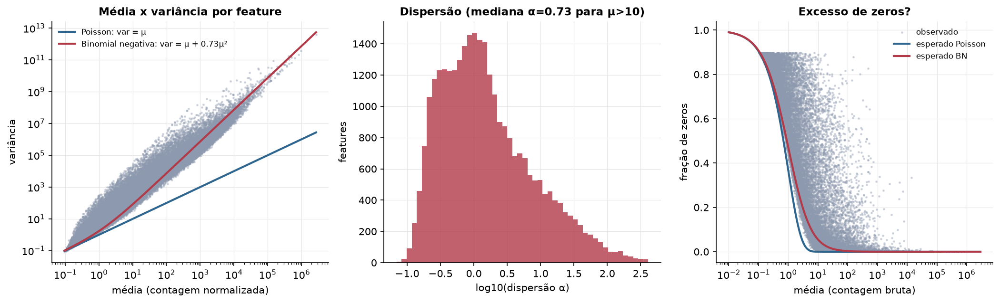
Exploração em log2(CPM+1)
Features com CPM ≥ 1 em pelo menos 20% das amostras (15.526 features).
Distribuição dos valores
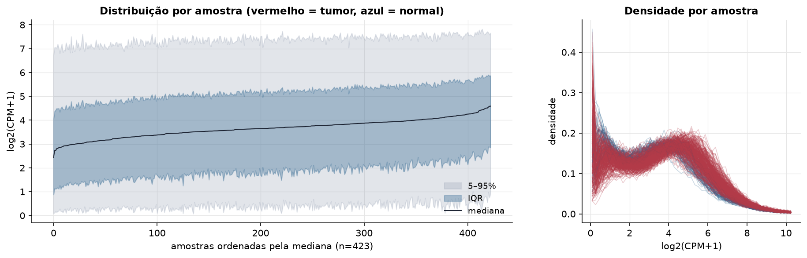
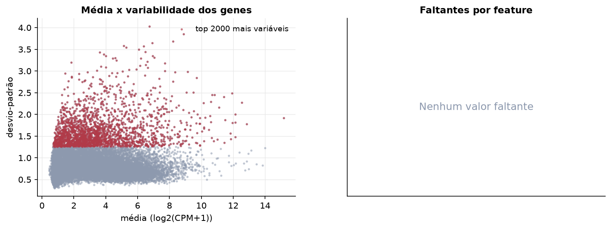
Estrutura das amostras
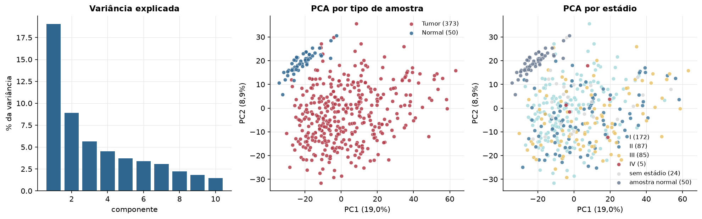
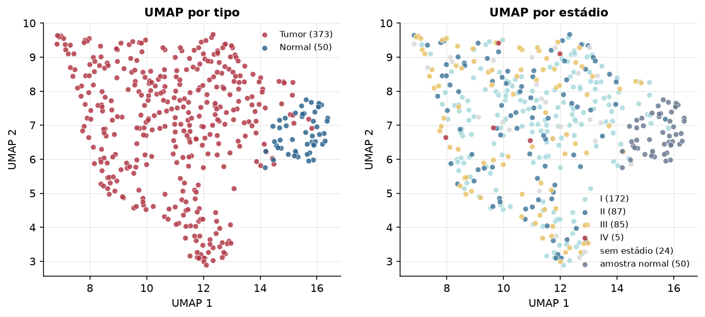
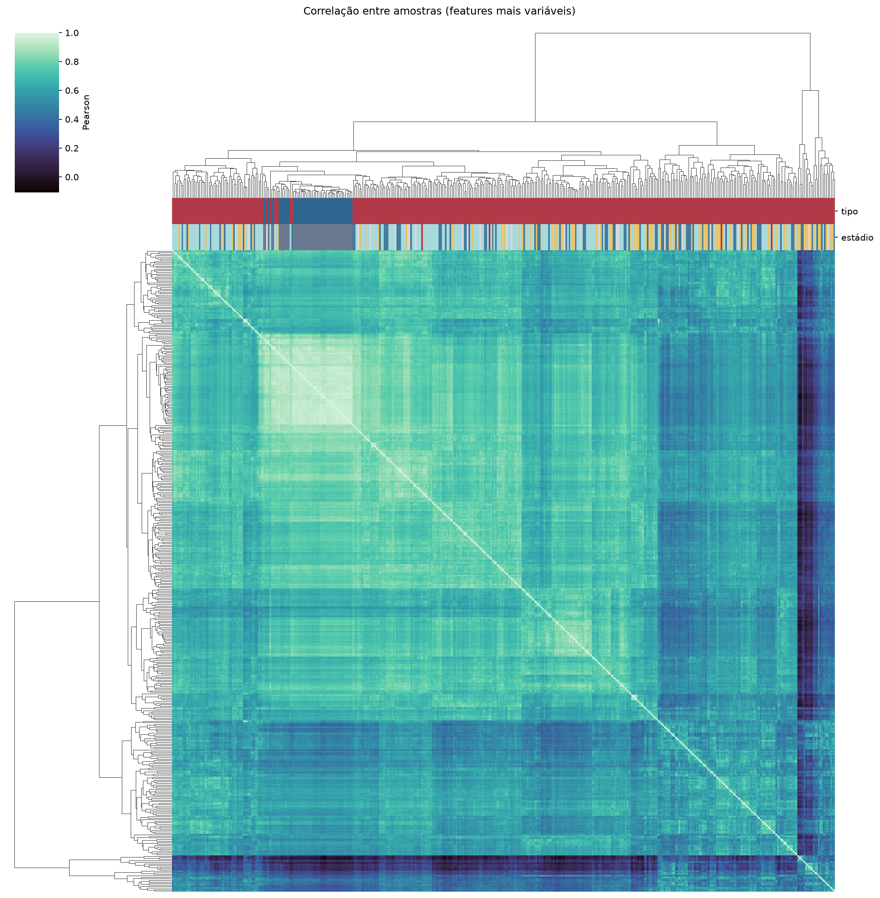
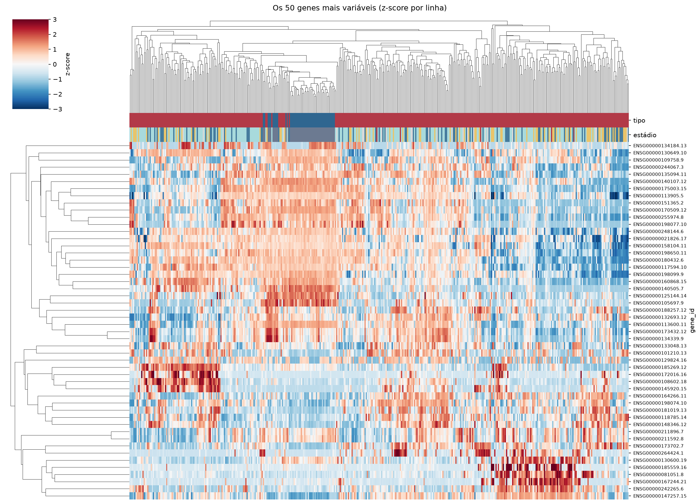
Tumor x normal
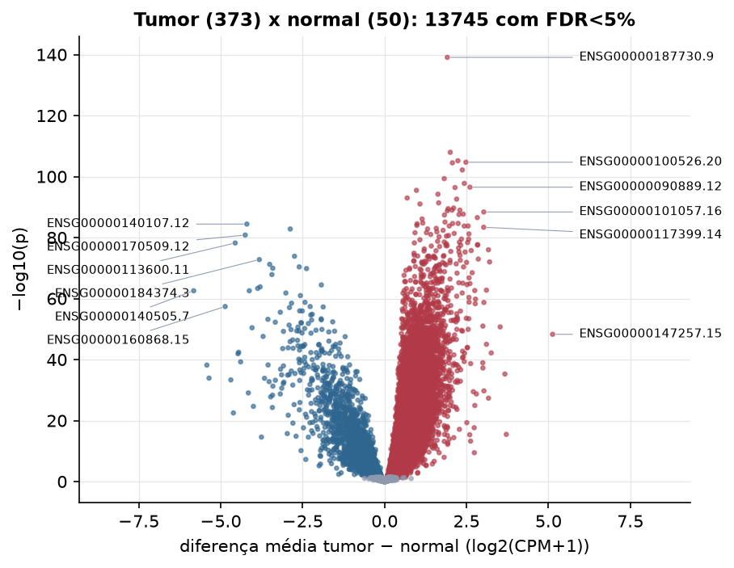
Features mais diferentes entre tumor e normal
| gene_id | diferenca_tumor_menos_normal | t | p | fdr |
|---|---|---|---|---|
| ENSG00000187730.9 | 1.914 | 38.45 | 8.21e-140 | 1.27e-135 |
| ENSG00000158402.20 | 2.004 | 30.924 | 1.11e-108 | 8.65e-105 |
| ENSG00000143228.13 | 2.238 | 30.216 | 6.6e-106 | 3.41e-102 |
| ENSG00000100526.20 | 2.482 | 32.531 | 2.01e-105 | 7.79e-102 |
| ENSG00000154839.10 | 2.069 | 29.776 | 3.13e-105 | 9.71e-102 |
| ENSG00000135451.13 | 2.372 | 30.11 | 6.76e-103 | 1.75e-99 |
| ENSG00000137135.18 | 1.82 | 31.356 | 4.77e-100 | 1.06e-96 |
| ENSG00000142945.13 | 2.433 | 29.512 | 1.72e-98 | 3.34e-95 |
| ENSG00000090889.12 | 2.605 | 30.443 | 3.02e-97 | 5.21e-94 |
| ENSG00000186185.14 | 2.149 | 28.053 | 4.05e-97 | 6.29e-94 |
| ENSG00000221818.9 | 0.972 | 28.192 | 3.35e-96 | 4.73e-93 |
| ENSG00000115163.15 | 1.628 | 27.281 | 6.03e-95 | 7.81e-92 |
| ENSG00000131097.7 | 0.689 | 28.872 | 1.06e-93 | 1.27e-90 |
| ENSG00000111665.12 | 2.198 | 29.512 | 2.42e-93 | 2.69e-90 |
| ENSG00000183763.9 | 1.65 | 28.715 | 4.19e-92 | 4.34e-89 |
| ENSG00000156509.14 | 1.08 | 26.823 | 9.71e-92 | 9.42e-89 |
| ENSG00000126787.13 | 2.107 | 27.957 | 2.07e-90 | 1.89e-87 |
| ENSG00000071539.14 | 1.94 | 27.124 | 3.42e-90 | 2.95e-87 |
| ENSG00000008300.17 | 2.058 | 27.275 | 1.01e-89 | 7.95e-87 |
| ENSG00000171388.12 | 2.297 | 28.329 | 1.02e-89 | 7.95e-87 |
| ENSG00000075218.19 | 1.916 | 26.529 | 1.67e-89 | 1.23e-86 |
| ENSG00000101057.16 | 3.026 | 27.491 | 4.08e-89 | 2.88e-86 |
| ENSG00000123485.12 | 2.401 | 29.137 | 2.09e-88 | 1.41e-85 |
| ENSG00000113296.14 | 2.272 | 25.965 | 2.71e-88 | 1.76e-85 |
| ENSG00000125459.17 | 1.827 | 36.187 | 3.99e-88 | 2.48e-85 |
| ENSG00000237649.8 | 2.83 | 30.329 | 2.84e-87 | 1.69e-84 |
| ENSG00000154920.15 | 1.145 | 25.415 | 7.98e-87 | 4.59e-84 |
| ENSG00000165480.16 | 1.843 | 27.202 | 8.56e-86 | 4.75e-83 |
| ENSG00000163463.13 | 1.165 | 27.864 | 1.71e-85 | 9.13e-83 |
| ENSG00000178999.13 | 2.245 | 27.56 | 2.35e-85 | 1.21e-82 |
Associação com variáveis clínicas
p-valores da associação dos três primeiros componentes principais (só tumores) com estádio (Kruskal-Wallis), sexo (Mann-Whitney), idade (Spearman) e sobrevida global (Cox univariado).
| estádio (Kruskal) | sexo (Mann-Whitney) | idade (Spearman) | sobrevida OS (Cox) | |
|---|---|---|---|---|
| PC1 (18,1%) | 0.000652 | 0.000135 | 1.89e-05 | 0.000691 |
| PC2 (7,5%) | 0.002 | 0.307 | 0.578 | 0.01 |
| PC3 (6,1%) | 0.942 | 0.000477 | 0.251 | 0.27 |